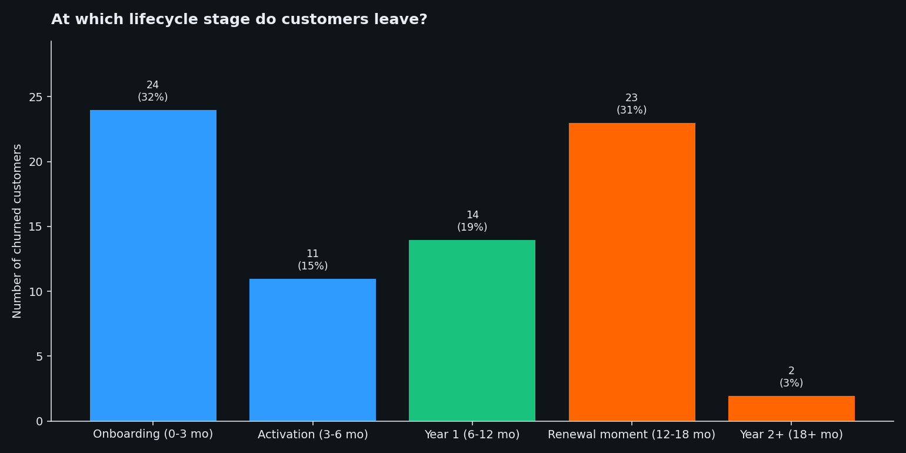
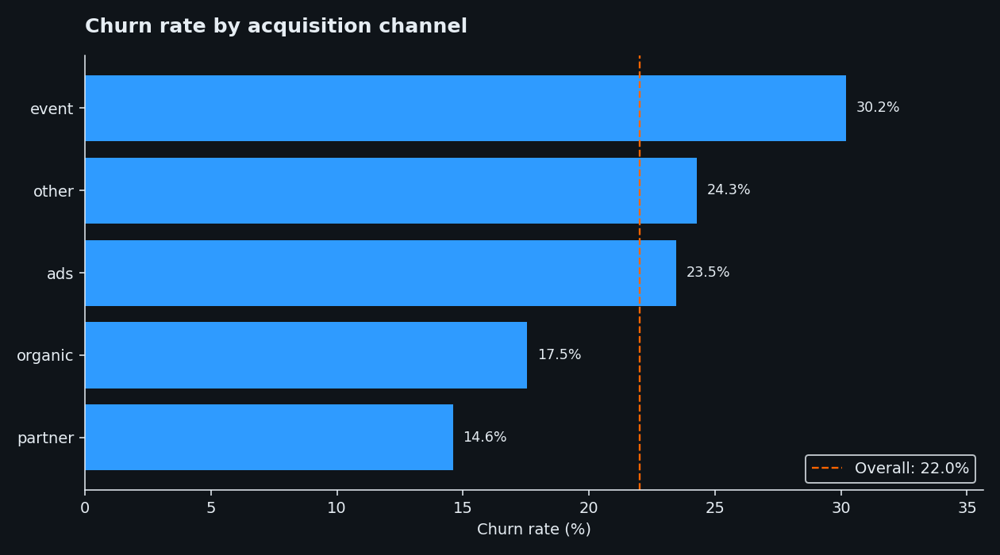
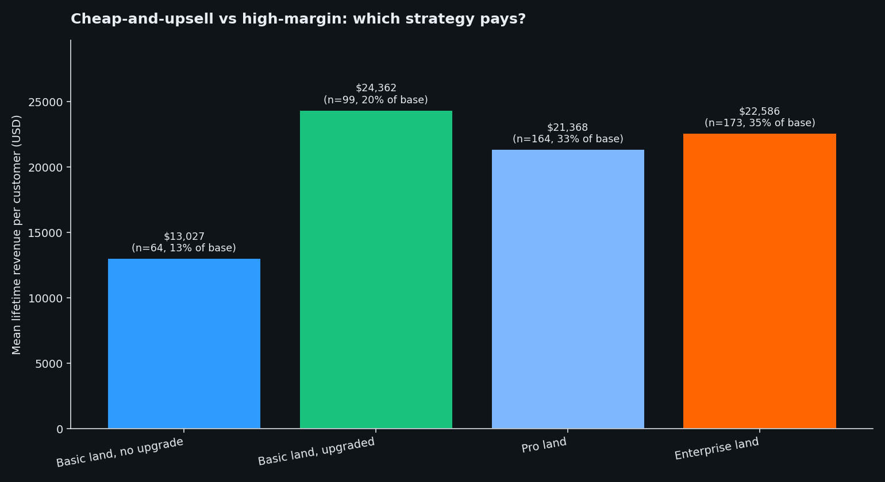
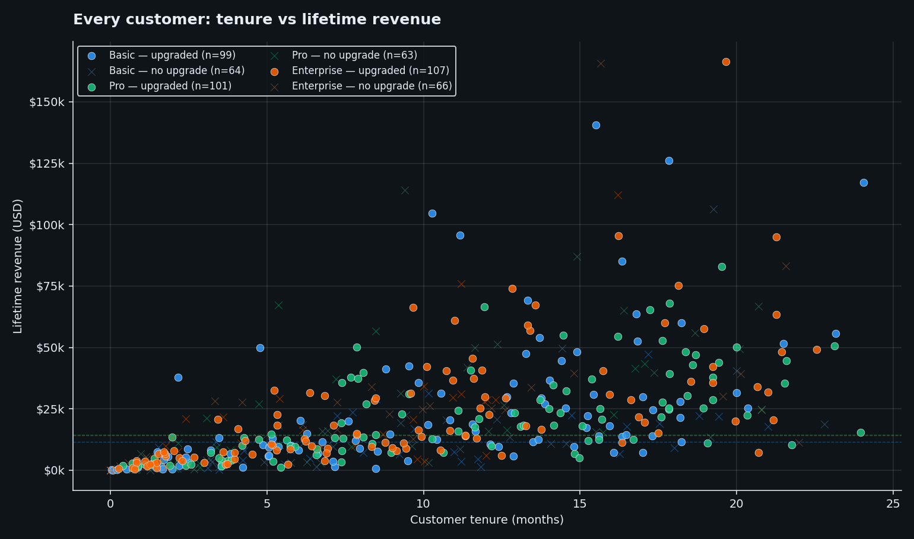
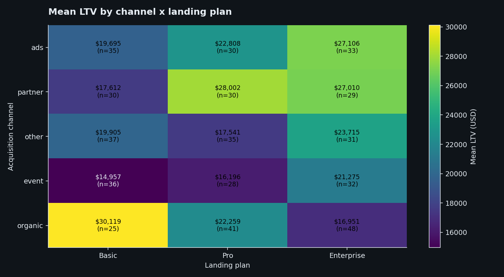
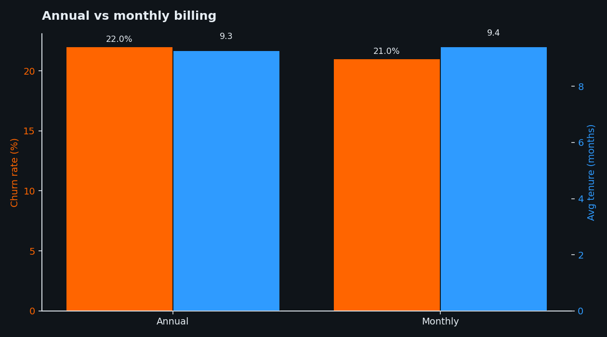
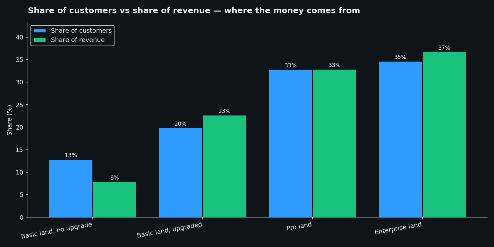
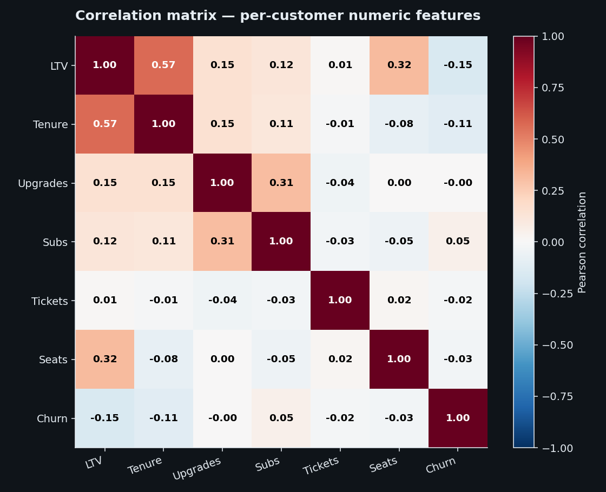
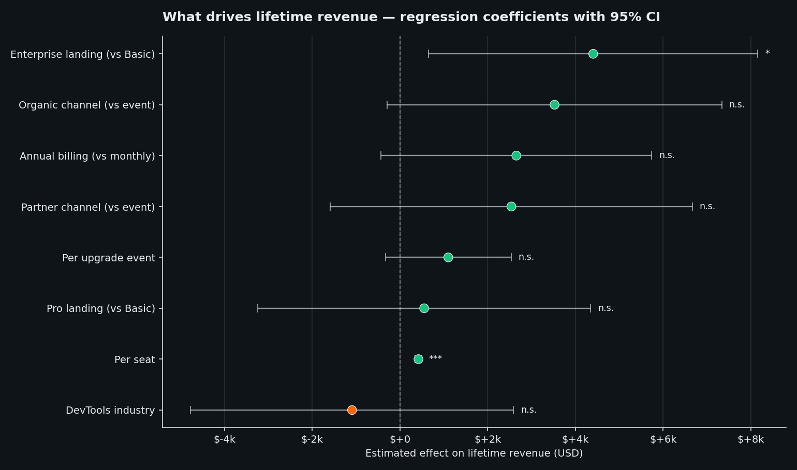

Cheap-and-upsell, or high-margin? A SaaS pricing study.
Every multi-tier subscription business asks the same question: lead with a cheap plan and rely on upgrades, or sell the premium tier from day one? I worked through 24 months of real-shape SaaS data — 500 customers, 5,000 subscription records, 5 linked tables — to find an answer grounded in numbers rather than instinct.
1. When do customers leave? — two humps, not one
The first analytical reflex is to ask when in a customer's lifecycle they churn. A single answer would simplify the strategy: invest in onboarding (early-churn business) or invest in customer success and renewals (late-churn business).
The data tells a less convenient story. Splitting the 74 customers with timestamped exit dates by their tenure-at-churn gives a clearly bimodal pattern:

Two equal-sized churn populations, separated by nine quiet months. That means there are two different problems here, each requiring a different playbook:
- Onboarding leavers say the product wasn't the right fit — the reasons they cite at exit lean to features and pricing. "This isn't for us."
- Renewal leavers made it through the first year but didn't renew. Their stated reasons skew toward support quality and feature gaps. "After 12 months, we're not getting what we need."
2. Where do customers come from? — acquisition channel is a 2× lever
Acquisition source is not just a cost-per-lead conversation. It is a churn-rate conversation. Customers acquired through partners churn at less than half the rate of customers acquired at events:

This is the kind of structural finding that should reshape a marketing-mix conversation. The cost of an event-sourced customer is not just their CAC — it is their CAC plus a 30% probability of losing them.
3. The pricing question — and the answer that surprised me
The setup that makes this question interesting: Basic plans average $475/month MRR, Enterprise plans average $4,918/month. A 10× price gap. The natural expectation is that Enterprise landings generate dramatically higher lifetime revenue.
They don't.
Splitting all 500 customers by their landing plan (the plan they first signed up on), the lifetime revenue distribution is much flatter than you'd expect:
| Landing plan | n | Mean LTV | Avg tenure | Churn rate | % who upgrade |
|---|---|---|---|---|---|
| Basic | 163 | $19,912 | 9.6 mo | 22.1% | 60.7% |
| Pro | 164 | $21,368 | 9.8 mo | 19.5% | 61.6% |
| Enterprise | 173 | $22,586 | 8.7 mo | 24.3% | 61.8% |
A 13% LTV gap from cheapest to most expensive, despite a 10× difference in entry price. The reason is in the right-most column: 60–62% of customers in every tier upgrade at some point. A Basic lander doesn't stay Basic — most of them migrate up the stack. The product has strong built-in expansion mechanics, and that compresses the LTV gap dramatically.
That reframes the strategic question. "Which plan should we sell?" is the wrong frame; the customer self-selects their final plan over time. The right question is: of the customers who land cheap, how many upgrade — and what are the ones who do worth?
The decisive split
Cut the Basic landers into two: those who upgraded and those who didn't. Compare all four resulting strategies head-to-head:

The catch: only 61% of Basic landers actually upgrade. The other 39% are worth less than half ($13,027 mean LTV). That makes the Basic→upgrade conversion rate the single highest-leverage operating metric in the business. A 5-point lift on the 163 Basic landers in this dataset would have added roughly $92,000 in lifetime revenue — without acquiring a single new customer.
The same story, customer by customer
The bar chart above is a summary — averages over groups of ~100 customers each. A scatter of all 500 customers tells the same story at the individual level, and shows where the variation actually sits:

A few things jump out:
- Revenue rises with tenure, as you'd expect — but the slope is steeper for upgraders (circles) than for non-upgraders (X marks) in every plan tier.
- The high-LTV outliers in the upper-right are mostly blue and green circles — Basic-upgraders and Pro-landers who stayed long enough to expand. The orange Enterprise-direct customers cluster lower than you'd guess from their starting MRR alone.
- The X marks are concentrated at low tenure — customers who didn't upgrade also didn't stay. They're a single customer profile, not two: short-tenure non-expanders.
The scatter is the reason the bar chart's headline holds up: it's not driven by a handful of giant Enterprise outliers paying their way to high group averages. It's a structural pattern across the whole customer base.
4. Where the money actually comes from — channel × plan
Crossing acquisition channel with landing plan exposes which combinations of sourcing and product entry actually generate revenue:

Three things stand out:
- Organic + Basic at $30,119 — customers who find the product themselves and start small are the most valuable cell on the whole grid. They have time to build conviction and upgrade aggressively.
- Partner + Pro at $28,002 — partner-sourced Pro landers convert at exceptional rates.
- Event-sourced is bottom-quartile across all plans. Event + Basic and Event + Pro are the two worst cells; combined with the 30% lifetime churn rate, the event channel is a genuine double loss.
5. The annual-billing myth — tested and rejected
Standard SaaS thinking holds that annual contracts reduce churn because they lock customers in for 12 months. The data doesn't support it:

Annual billing customers churn at 22.0%, monthly at 21.0%. Average tenure is identical. The 9% LTV gap is almost entirely a price effect (annual is typically slightly discounted), not a retention effect. Customers who want to leave appear to leave regardless of contract structure; annual contracts simply defer the cancellation to the renewal anniversary.
The practical implication is that any annual-billing discount RavenStack offers is not buying retention — it is buying upfront cash. That can still be a defensible trade-off, but it's a treasury argument, not a churn argument. If the discount is larger than the cost-of-capital justification, it is margin given away for nothing.
6. Share of customers vs share of revenue
One last cut: if every strategy generated revenue in proportion to its customer share, blue and green bars below would be equal. Imbalances point to structural over- or under-performance:

The Enterprise-direct cohort is only slightly more revenue-productive than its customer share would predict. The "premium customers pull weight" hypothesis isn't really supported in this dataset — they pay more per month, but they also churn faster and stay shorter, which cancels most of the advantage.
7. Statistical evidence — what survives proper controls
Bar charts and group averages can mislead. A finding that looks strong in raw comparisons sometimes evaporates once you control for other things — and a finding that looks weak can turn out to be the dominant signal. To stress-test the patterns above, I ran two regression models on the per-customer dataset:
- A linear model on lifetime revenue (LTV) with 9 predictors — tenure, seats, plan tier, channel, billing, industry, upgrade count. What independently moves the dollar number?
- A logistic model on churn (binary outcome) with the same predictor set. What independently moves the odds of leaving?
Correlations first — the simple view
Before the models, the pairwise correlation matrix among the numeric features confirms three things at a glance:

- LTV is anchored by tenure (r=0.57) and seats (r=0.32). Everything else is a sideshow at the bivariate level.
- Support tickets correlate with nothing (|r| ≤ 0.04 across the board) — confirming the null finding from the support-vs-churn notebook with another method.
- Churn correlates only modestly even with tenure (r = −0.11), which means a single number can't predict it — interactions and categorical features do most of the work.
What drives lifetime revenue — the linear model
Forest plot of the regression coefficients with 95% confidence intervals. Stars indicate p-values: *** < 0.001, ** < 0.01, * < 0.05, n.s. = not significant.

What survives the regression:
- Tenure: +$2,275 per month (p < 0.001). The dominant LTV mechanic — revenue accumulates over time. Tenure alone explains a large share of the R² = 0.48.
- Seats: +$421 per seat (p < 0.001). Bigger organisations generate proportionally more LTV. The single most reliable non-tenure predictor.
- Enterprise landing: +$4,405 vs Basic (p = 0.02). After controlling for tenure and seats, an Enterprise lander still earns a measurable premium — the only landing-plan effect that survives.
- Organic channel (+$3,523, p = 0.07) and annual billing (+$2,653, p = 0.09) trend positive but don't reach conventional significance with 500 customers.
- Per-upgrade event (+$1,101, p = 0.13), Pro landing, partner channel, DevTools industry: not significant after controlling for the others.
That doesn't invalidate the recommendation to focus on upgrade conversion — the combined effect (more upgrades → more tenure → more LTV) still flows through the same operational lever. But it's a more honest statement of the mechanism than a raw average comparison.
What drives churn — the logistic model
For churn (a binary outcome) the logit model is the right tool. Coefficients are reported as odds ratios: values above 1 mean higher churn odds; values below 1 mean lower churn odds.
| Predictor | Odds ratio | 95% CI | p-value | Verdict |
|---|---|---|---|---|
| Partner channel (vs event) | 0.51 | 0.26 – 0.97 | 0.040 | Partner = half the odds of churning |
| DevTools industry | 1.80 | 1.11 – 2.93 | 0.018 | DevTools = 80% higher odds of churning |
| Tenure (per month observed) | 0.96 | 0.92 – 0.99 | 0.011 | Survivor bias — long-tenure customers don't churn |
| Organic channel (vs event) | 0.57 | 0.33 – 1.01 | 0.054 | Marginal — directionally lower churn |
| Enterprise landing (vs Basic) | 1.19 | 0.71 – 2.01 | 0.514 | n.s. |
| Pro landing (vs Basic) | 0.87 | 0.50 – 1.51 | 0.627 | n.s. |
| Annual billing (vs monthly) | 1.04 | 0.67 – 1.61 | 0.861 | n.s. — confirms the lock-in myth |
| Support tickets (per ticket) | 0.97 | 0.86 – 1.09 | 0.562 | n.s. — confirms the support null |
| Seats (per seat) | 1.00 | 0.99 – 1.01 | 0.453 | n.s. |
What the logit tells us with statistical force:
- Partner-sourced customers have ~50% lower odds of churning vs event-sourced (OR = 0.51, p = 0.04). The channel-quality finding is real, not a sample-size artifact.
- DevTools customers have 80% higher odds of churning (OR = 1.80, p = 0.02). The industry effect is real and large.
- Plan tier, annual billing, support-ticket count, and organisation size are not predictive of churn after controls. Every single one of the "common wisdom" levers fails the statistical test.
The findings that do survive — channel quality and industry fit — are the two strategic levers the recommendations below lean on.
What I'd actually do, based on this
- Lead with Basic, optimise for upgrade conversion. The successful Basic-upgrader is the highest-LTV segment in the business. The strategic priority isn't which plan to push at the top of the funnel — it's the Basic→Pro/Enterprise conversion rate, currently 61%. A structured upgrade prompt at the 90-day mark is the obvious first move.
- Cut event-led acquisition. Events deliver the lowest-LTV customers ($17,424) at the highest churn rate (30%). Every dollar of events budget would be better spent on partner channel ($24,177 LTV, 14.6% churn) or organic SEO ($21,748 LTV, 17.5% churn).
- Stop subsidising annual billing for retention. The annual contract isn't buying retention. If the discount is being justified on retention grounds, tighten it. If the cash-flow argument stands on its own, keep it — but be honest about which lever you're pulling.
Putting it together
The customers most worth having are the ones who choose the product on their own terms (organic), start small (Basic), and grow into it (upgrade within the first year). Almost every operational lever in this study points the same direction: de-risk the entry, invest in upgrade conversion, and stop spending money on channels and structural discounts that don't pay back.
That's not the conventional SaaS playbook — which leans heavily into events, high-touch enterprise sales, and annual lock-in. But it's what the numbers in this dataset support, and the structural mechanics behind the result (expansion rates, self-selection, channel quality) are the kind of patterns that tend to generalise.
How this was built
Five Jupyter notebooks in Python. Each is a self-contained analysis the others build on; GitHub renders them inline with all charts visible. Plain-Python script equivalents are available alongside for readers who prefer non-notebook source.
- 01 — First look: segmentation by plan, industry, country, acquisition channel — notebook · script
- 02 — Cohort retention: pooled curve, by-cohort curves, full retention heatmap, lifecycle-stage analysis — notebook · script
- 03 — Playground: a beginner notebook with chart recipes for re-slicing the data — notebook
- 04 — Support vs churn: stress-test of the "support drives renewal churn" hypothesis — notebook · script
- 05 — Pricing strategy: the analysis behind the recommendations above — notebook · script
- 06 — Statistical evidence: correlation matrix, OLS regression on LTV, logistic regression on churn (statsmodels) — notebook · script
Browse the full study folder on GitHub — notebooks, scripts and chart exports.
Stack: Python 3.13, pandas 3.0, matplotlib. Dataset: RavenStack on Kaggle (simulated, MIT licence).
Charts use the brand palette: blue #2F9BFF, green #19C37D, orange #FF6500.
Caveats and limitations. The dataset is simulated, so the absolute numbers shouldn't be taken as benchmarks. The patterns (LTV convergence via expansion, channel-quality gradient, billing-frequency neutrality) are structurally plausible and the kind of effects worth testing on real data. 74 of 110 churned accounts have timestamped exit dates; the remaining 36 are flagged churned but undated and were excluded from stage-level analyses. With 500 customers, some of the channel × plan cells are small (n ≈ 25–48); the study leans on the directional pattern rather than any single cell.
Want to discuss the methodology, or run this on your data? Get in touch.